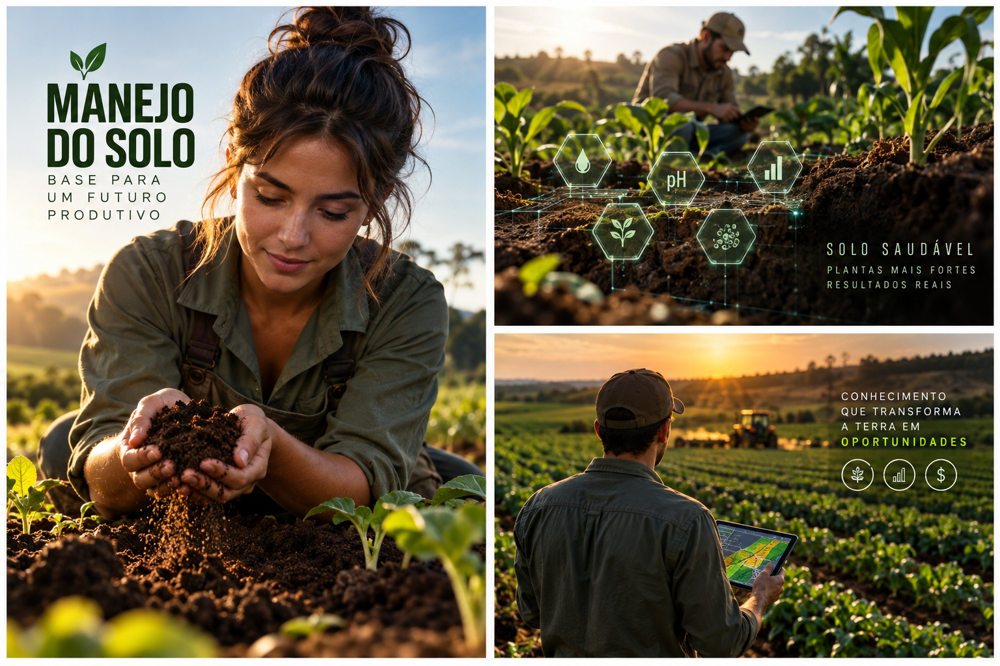

Produza alimentos enquanto a floresta cresce: sucessão, estratos, solo vivo, biomassa, desenho, manejo e economia em um sistema produtivo regenerativo.
6 módulos24 aulasProjeto de 12 meses
0 de 24 aulas concluídas
Produzir imitando processos da floresta
Você vai sair da ideia de “misturar culturas” para compreender como desenhar um sistema agroflorestal no espaço e no tempo. As aulas estão mais aprofundadas: cada tema explica o conceito, mostra por que ele importa no manejo e termina com uma aplicação prática.
01
Entender a lógica da agrofloresta
Antes de plantar, aprenda a enxergar o sistema como uma floresta produtiva em transformação.
Aula 01
O que é um sistema agroflorestal
Agrofloresta é uma forma de uso da terra que combina espécies agrícolas e arbóreas no mesmo espaço, buscando produzir enquanto o sistema recupera funções ecológicas. Em vez de pensar cada planta isoladamente, o manejo considera relações entre luz, água, raízes, matéria orgânica, sucessão e tempo. Existem muitos desenhos possíveis: quintais agroflorestais, sistemas com frutíferas, cultivos anuais entre linhas de árvores e arranjos mais complexos inspirados na sucessão natural.
O ponto central não é simplesmente “plantar árvores na lavoura”. É desenhar uma comunidade de plantas em que cada componente tenha função produtiva e ecológica. Algumas espécies fornecem alimento, outras biomassa, sombra, madeira, abrigo para fauna ou melhoria do microclima. O agricultor passa a manejar relações e ciclos, e não apenas uma cultura.
Atividade prática
Observe um terreno, praça, quintal ou área rural e identifique três estratos de vegetação diferentes.
Aula 02
Sucessão: o sistema muda com o tempo
Uma floresta jovem não tem a mesma estrutura de uma floresta madura. Espécies ocupam o espaço, modificam o ambiente e criam condições para outras. A agrofloresta usa essa dinâmica para planejar cultivos de ciclos rápidos, médios e longos no mesmo projeto. Enquanto hortaliças podem gerar colheitas em semanas ou meses, frutíferas e árvores permanecem por anos.
Planejar sucessão evita imaginar o sistema como uma fotografia estática. Uma bananeira que hoje oferece sombra pode ser manejada amanhã para liberar luz; uma espécie de crescimento rápido pode produzir biomassa e depois ceder espaço. O desenho precisa prever o que estará ocupando cada camada em diferentes momentos.
Atividade prática
Escolha cinco espécies e organize-as em ciclo curto, médio ou longo.
Aula 03
Estratos e uso da luz
Plantas possuem arquiteturas e necessidades luminosas diferentes. Em sistemas agroflorestais, é possível organizar espécies em diferentes alturas para aproveitar melhor a radiação solar sem criar competição excessiva. Coberturas rasteiras, hortaliças, arbustos, frutíferas e árvores altas podem ocupar camadas distintas.
Estratificação exige observação. Sombra demais reduz produção de espécies exigentes em sol; pouca cobertura pode deixar solo exposto e quente. O manejo de poda, espaçamento e escolha de espécies regula essa distribuição de luz ao longo do ano.
Atividade prática
Desenhe um perfil lateral com pelo menos quatro alturas de plantas.
Aula 04
Diversidade com função
Diversidade útil não significa colocar o maior número possível de espécies no mesmo lugar. Cada planta precisa ter uma função clara e compatibilidade com o sistema. Alimentos, plantas de biomassa, fixadoras de nitrogênio, espécies atrativas para polinizadores e árvores de valor econômico podem ser combinadas de forma estratégica.
Quanto maior a complexidade, maior também a necessidade de manejo e conhecimento. Para começar, um arranjo simples e compreensível costuma ser melhor que um sistema excessivamente denso. A diversidade deve ajudar a produção, a resiliência e a regeneração — não dificultar o trabalho.
Atividade prática
Monte uma lista de oito espécies e escreva ao lado a função principal de cada uma.
Ferramenta do módulo — atualize seu Caderno Agroflorestal com desenho, observações, calendário e decisões de manejo.
02
Solo vivo e produção de biomassa
Transforme folhas, galhos e raízes em infraestrutura para fertilidade.
Aula 05
Solo coberto o ano inteiro
Na floresta, solo nu é exceção. Folhas, galhos e plantas vivas protegem a superfície contra impacto da chuva, calor intenso e perda rápida de umidade. A cobertura também oferece alimento e abrigo para organismos que participam da decomposição e da ciclagem de nutrientes.
Em agrofloresta, manter cobertura é uma decisão de manejo. Palhada, restos de poda e plantas de cobertura podem formar uma camada protetora. O objetivo não é criar uma espessura arbitrária, mas observar umidade, decomposição e resposta das culturas para ajustar a quantidade.
Atividade prática
Compare temperatura e umidade de um ponto coberto e outro descoberto.
Aula 06
Biomassa é recurso
Capins, leguminosas, bananeiras e árvores de crescimento rápido podem produzir grande quantidade de material vegetal. Quando manejada e devolvida ao solo, essa biomassa participa da ciclagem de nutrientes e ajuda a construir matéria orgânica. Assim, parte da fertilidade pode ser produzida dentro do próprio sistema.
Isso muda a lógica econômica: uma espécie que não gera venda direta pode reduzir necessidade de insumos, proteger o solo ou melhorar o ambiente para uma cultura comercial. Seu valor deve ser analisado pela função que presta ao conjunto.
Atividade prática
Escolha duas espécies de biomassa adequadas à sua região para pesquisar depois.
Aula 07
Raízes também constroem solo
A parte invisível das plantas é decisiva. Raízes criam canais, interagem com microrganismos, exploram diferentes profundidades e deixam resíduos orgânicos quando se renovam. Sistemas com raízes variadas tendem a explorar o perfil do solo de maneira mais diversa.
Compactação, encharcamento e baixa matéria orgânica podem limitar esse processo. Antes de pensar apenas em adubação, é importante observar estrutura, drenagem e presença de raízes. Um solo biologicamente ativo é resultado de manejo contínuo.
Atividade prática
Abra um pequeno perfil de solo e observe raízes, agregados, umidade e sinais de vida.
Aula 08
Poda como ferramenta de manejo
Poda não serve apenas para reduzir tamanho. Em agrofloresta ela pode controlar sombra, estimular rebrota, gerar cobertura e acelerar a circulação de matéria orgânica. O material cortado pode permanecer no sistema quando apropriado, protegendo e alimentando o solo.
Cada espécie responde de forma diferente à poda. É necessário conhecer época, intensidade e capacidade de rebrota, além de usar ferramentas seguras. Podar sem objetivo pode enfraquecer plantas ou reduzir produção; podar com planejamento reorganiza luz e biomassa.
Atividade prática
Escolha uma árvore conhecida e pesquise como ela responde à poda antes de qualquer intervenção.
Ferramenta do módulo — atualize seu Caderno Agroflorestal com desenho, observações, calendário e decisões de manejo.
03
Desenhar o sistema
Passe da ideia para um arranjo que considere espaço, tempo, água e colheita.
Aula 09
Ler o terreno antes de desenhar
Orientação solar, declive, ventos, caminhos da água, áreas encharcadas e acessos influenciam o projeto. Um bom desenho começa caminhando pela área e registrando padrões. Plantar primeiro e observar depois pode criar problemas difíceis de corrigir quando as árvores crescerem.
Também é importante considerar infraestrutura: entrada de materiais, circulação de pessoas, irrigação, local de compostagem e saída da produção. O mapa inicial não precisa ser sofisticado; precisa representar o que realmente existe.
Atividade prática
Faça um croqui indicando norte, sol, água, declive, acessos e construções.
Aula 10
Consórcios simples para começar
Um consórcio reúne espécies que compartilham espaço e tempo. Para iniciantes, vale começar com poucas plantas de funções complementares e ciclos diferentes. Uma combinação pode incluir cultura anual, espécie de cobertura, frutífera e árvore de serviço, desde que clima e manejo sejam compatíveis.
A pergunta principal é: essas plantas conseguem coexistir sem criar uma demanda de trabalho maior do que você consegue atender? O melhor consórcio no papel pode fracassar se irrigação, poda ou colheita forem inviáveis.
Atividade prática
Crie um consórcio de quatro espécies e explique por que elas podem funcionar juntas.
Aula 11
Espaçamento pensando no futuro
Uma muda pequena pode virar uma copa de vários metros. Por isso o espaçamento precisa considerar o tamanho adulto, o manejo planejado e a duração daquela espécie no sistema. Algumas árvores permanecerão; outras poderão ser podadas intensamente ou retiradas durante a sucessão.
Linhas muito fechadas podem aumentar sombra e competição; linhas excessivamente abertas deixam de aproveitar interações desejadas. O desenho deve ser revisado conforme o sistema cresce.
Atividade prática
Marque no seu croqui o diâmetro aproximado das copas futuras.
Aula 12
Água no desenho
A água deve ser tratada como fluxo. Cobertura do solo, matéria orgânica, raízes e relevo influenciam infiltração e armazenamento. Sistemas agroflorestais podem melhorar essas funções ao longo do tempo, mas mudas recém-plantadas ainda podem exigir irrigação e atenção especial.
Intervenções que alteram escoamento precisam considerar segurança, solo e legislação aplicável. Em projetos maiores ou terrenos com erosão severa, orientação técnica pode evitar problemas.
Atividade prática
Desenhe de onde a água entra, por onde passa e onde tende a se acumular no terreno.
Ferramenta do módulo — atualize seu Caderno Agroflorestal com desenho, observações, calendário e decisões de manejo.
04
Implantar e manejar
Organize plantio, manutenção e observação para os primeiros anos.
Aula 13
Preparação sem destruir a estrutura
Preparar uma área não significa necessariamente revolver todo o solo. O método depende de compactação, vegetação existente, cultura e histórico da área. Em muitos casos, abertura localizada, cobertura e adição de matéria orgânica permitem iniciar com menor perturbação.
Antes de qualquer limpeza, identifique árvores úteis, regeneração natural e espécies que podem integrar o sistema. Remover tudo para depois “reflorestar” pode desperdiçar recursos já presentes.
Atividade prática
Liste o que deve permanecer, ser manejado ou ser removido em uma área hipotética.
Aula 14
Plantio em etapas
Implantar tudo no mesmo dia pode exigir dinheiro, água e trabalho demais. Dividir o projeto em etapas permite aprender com uma pequena área antes de ampliar. Primeiro podem entrar espécies estruturantes e culturas de ciclo rápido; depois, novas camadas conforme o manejo se estabiliza.
Esse método também distribui custos. Um módulo piloto bem acompanhado produz informação real sobre sobrevivência, mão de obra e produtividade.
Atividade prática
Divida seu projeto em três etapas de implantação.
Aula 15
Manejo no primeiro ano
O primeiro ano costuma exigir atenção intensa a água, plantas espontâneas, formigas, cobertura e sobrevivência das mudas. O sistema ainda não possui a autorregulação e o microclima de uma área mais estabelecida. Rotinas curtas e frequentes ajudam a detectar problemas cedo.
Registrar mortalidade e crescimento permite ajustar espécies e práticas. Uma muda perdida não é apenas falha: pode indicar excesso de sol, drenagem ruim, época inadequada ou outro fator que precisa ser entendido.
Atividade prática
Crie uma ficha mensal com sobrevivência, crescimento, cobertura, água e ocorrências.
Aula 16
Aprender observando respostas
Agrofloresta é manejo adaptativo. O agricultor observa como plantas respondem e modifica poda, densidade, irrigação e sucessão. Receitas prontas têm limites porque clima, solo, espécies e objetivos variam entre propriedades.
Fotografias em pontos fixos, medições simples e diário de campo ajudam a enxergar mudanças que a memória não registra. Com o tempo, o próprio sistema ensina quais decisões funcionam melhor naquele lugar.
Atividade prática
Defina três pontos fixos para fotografar mensalmente seu sistema.
Ferramenta do módulo — atualize seu Caderno Agroflorestal com desenho, observações, calendário e decisões de manejo.
05
Produção, colheita e renda
Faça a floresta produtiva conversar com mercado e organização financeira.
Aula 17
Colheitas em diferentes tempos
Uma vantagem potencial da diversidade é distribuir produtos ao longo do calendário. Hortaliças e raízes podem gerar retorno antes de frutíferas e árvores de ciclo longo. Essa combinação ajuda a criar fluxo de produção enquanto o sistema amadurece.
Mas diversidade não garante renda automaticamente. Cada produto precisa de destino, qualidade, volume e logística. Planejar colheitas junto ao calendário de manejo reduz surpresas.
Atividade prática
Monte uma linha do tempo com produtos de 3 meses, 1 ano, 3 anos e longo prazo.
Aula 18
Custos de implantação e manutenção
Mudas, sementes, ferramentas, irrigação, transporte e mão de obra formam o custo inicial. Depois surgem manutenção, poda, colheita e comercialização. Algumas economias aparecem gradualmente, como maior produção interna de biomassa.
Separar investimento inicial de custo recorrente permite avaliar melhor o projeto. Trabalho familiar também deve ser registrado para que o resultado econômico não pareça maior do que realmente é.
Atividade prática
Crie uma tabela com investimento inicial, custos mensais e trabalho necessário.
Aula 19
Agregar valor à diversidade
Produtos agroflorestais podem chegar ao consumidor por feiras, cestas, restaurantes, venda direta e outros canais. Histórias de origem e práticas ambientais podem fortalecer comunicação, mas não substituem qualidade, regularidade e conformidade sanitária quando aplicável.
Também é possível pensar em mudas, sementes, frutas processadas ou experiências educativas, dependendo da estrutura e das regras locais. A estratégia deve começar pelo que o sistema consegue entregar com consistência.
Atividade prática
Escolha três produtos e associe cada um a um canal de venda possível.
Aula 20
Indicadores além da receita
Receita é essencial, mas não descreve todo o desempenho. Cobertura do solo, sobrevivência de árvores, diversidade, redução de compras externas, infiltração de água e horas de trabalho também ajudam a avaliar evolução.
Um conjunto pequeno de indicadores torna o manejo mais objetivo. Medir tudo é inviável; medir o que orienta decisões é poderoso.
Atividade prática
Escolha dois indicadores econômicos, dois produtivos e dois ecológicos.
Ferramenta do módulo — atualize seu Caderno Agroflorestal com desenho, observações, calendário e decisões de manejo.
06
Projeto agroflorestal de 12 meses
Integre desenho, calendário, manejo e economia em um plano executável.
Aula 21
Defina objetivo e escala
O desenho depende do objetivo. Produzir alimentos para casa, vender cestas, recuperar uma área e formar um pomar comercial exigem prioridades diferentes. Também é necessário dimensionar a área conforme disponibilidade de tempo, água e recursos.
Começar menor pode acelerar aprendizado. Uma área bem manejada fornece dados para expansão e reduz o risco de abandonar um projeto grande demais.
Atividade prática
Escreva objetivo, área inicial e três resultados esperados para o primeiro ano.
Aula 22
Monte o mapa temporal
Seu desenho precisa mostrar não só onde cada espécie começa, mas como o espaço muda. Registre o que entra primeiro, o que será podado, quais cultivos saem e quais árvores assumem mais espaço.
Essa visão temporal transforma um mapa de plantio em plano de sucessão. Ela também ajuda a prever períodos de maior trabalho e colheita.
Atividade prática
Faça dois desenhos: sistema no mês 1 e sistema imaginado no mês 12.
Aula 23
Calendário de manejo e caixa
Una tarefas agrícolas e financeiras. Plantio, irrigação, poda e colheita devem aparecer ao lado de compras, vendas e investimentos previstos. Assim é possível identificar meses em que haverá muito trabalho ou pouca entrada de dinheiro.
O calendário não precisa prever tudo com precisão; ele serve como hipótese que será atualizada com dados reais.
Atividade prática
Monte 12 linhas, uma por mês, com manejo, custo previsto e possível receita.
Aula 24
Plano de aprendizagem contínua
Nenhum curso substitui a observação do território. Visitar experiências locais, conversar com agricultores, estudar espécies e buscar assistência técnica quando necessário aumenta a qualidade das decisões. Agrofloresta combina conhecimento ecológico, agricultura e prática acumulada.
Seu projeto final deve ser tratado como versão 1.0. Ao fim de cada ciclo, compare o planejado com o ocorrido e atualize o desenho.
Atividade prática
Defina três fontes de aprendizagem que acompanharão seu primeiro ano.
Ferramenta do módulo — atualize seu Caderno Agroflorestal com desenho, observações, calendário e decisões de manejo.

Projeto final — Meu Sistema Agroflorestal de 12 Meses
Construa uma primeira versão executável. O projeto fica salvo neste navegador e pode ser impresso em PDF.